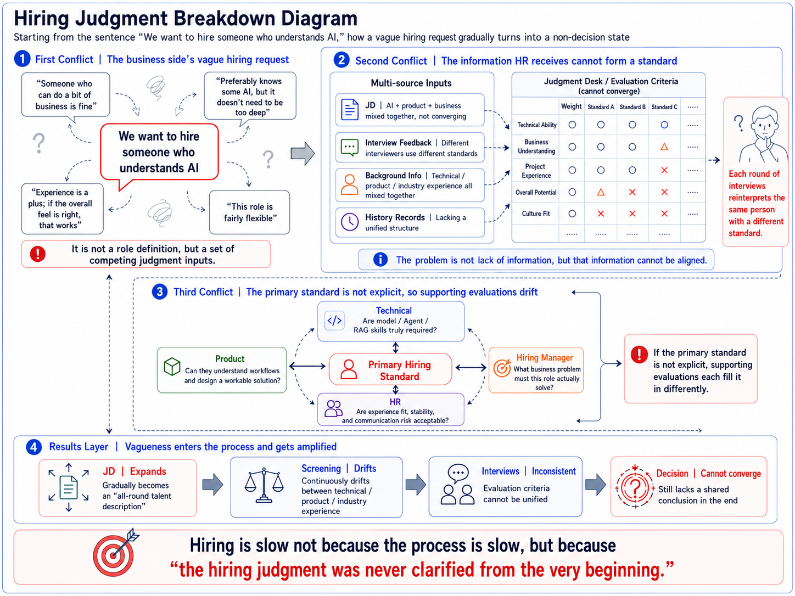
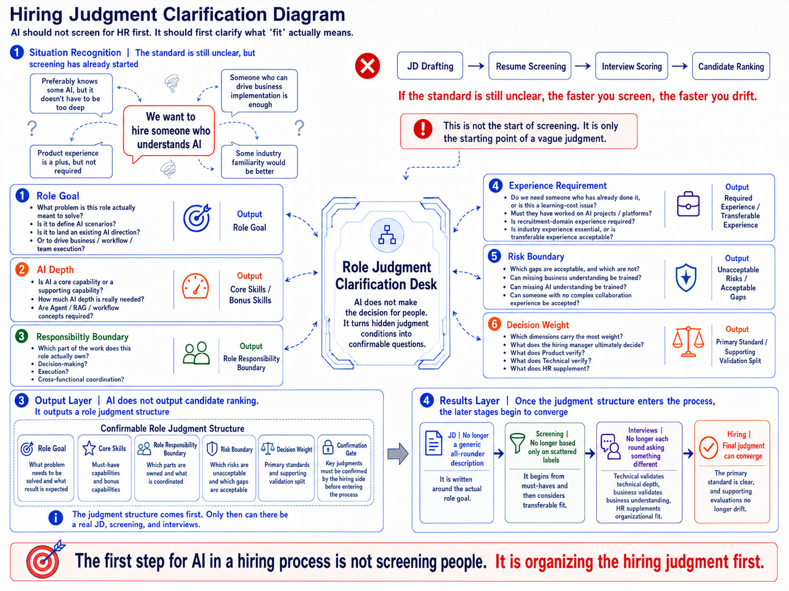
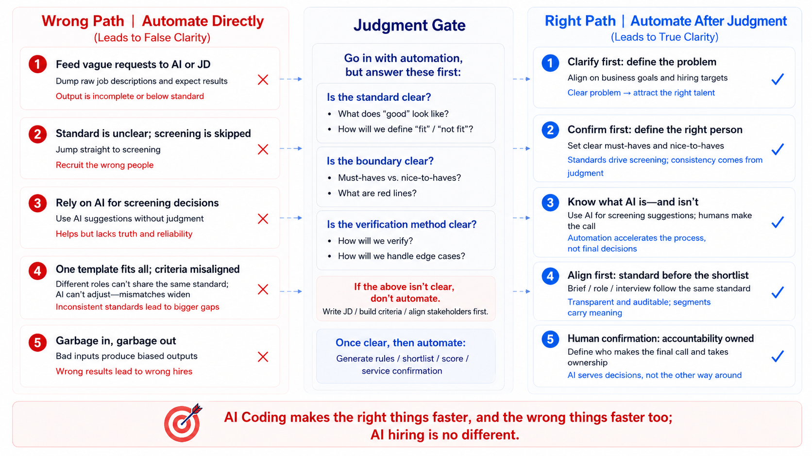
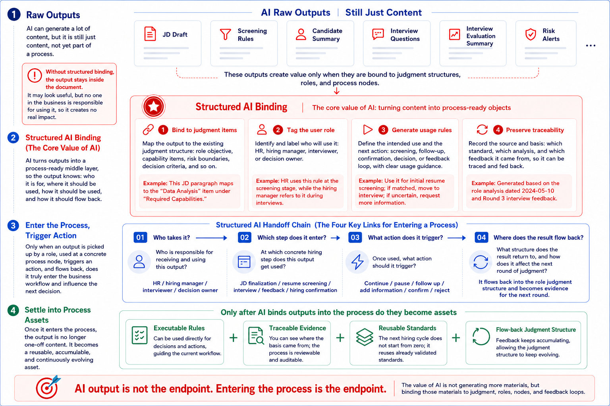
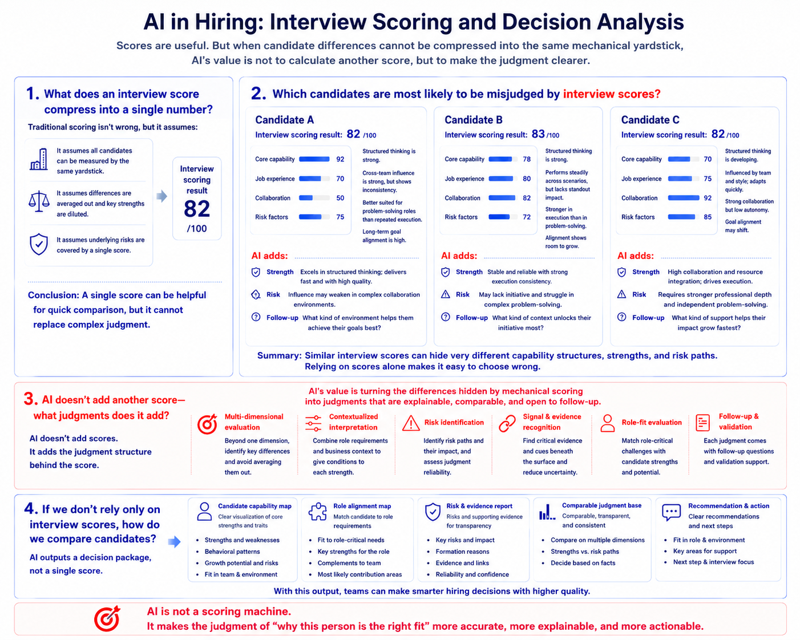
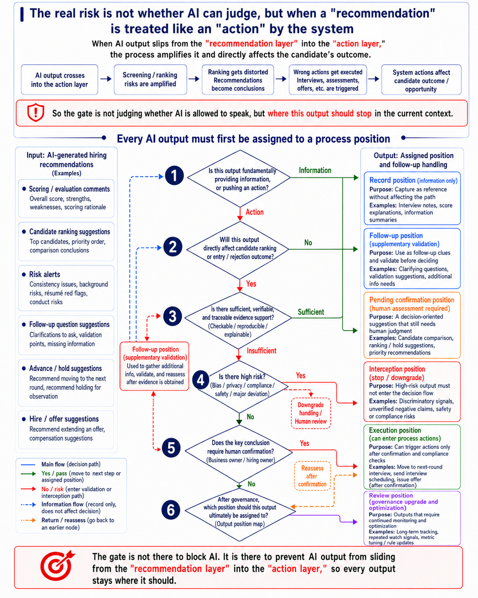

Recruiting & Staffing
Judgment question: Is this person the right fit?
00 Hero
Starting from a vague request like “we need someone who understands AI”, showing how HR and business teams clarify hiring decisions.
Previous modules represent capabilities; this page is a sample room where they are placed into a real hiring scenario.
Sample room construction:
01｜Project 1: Load-bearing Context Wall (Trusted Context｜Input Layer)JD / level / interview feedback / historical records→ Information foundation for hiring judgment
02｜Project 2: Decision Pathway (Business Signal Flow｜Process Layer)Intake → clarification → screening → interview → decision→ Decision flow inside recruitment
03｜Project 3: Decision Assembly Unit (Structured Output｜Output Layer)JD / interview questions / candidate package→ Structured recruitment decision outputs
04｜Project 4: Judgment Gate (Methodology Base｜Control Layer)scenario / boundary / gate→ AI intervention control rules in recruitment

01 Scenario Mining
HR is not a single recruiting process. It is a network of recurring judgments about people and organizations. Recruiting, performance, promotion, learning, org diagnosis, compensation, and employee relations can all be supported by AI, but the starting point should not be “where can we add AI?”
This screen performs the scenario-mining step first: map the HR domain, compare candidate judgment scenarios across ambiguity, role conflict, information dispersion, process impact, confirmation gates, AI boundary fit, and sample-line completeness, then choose the first sample-room route: recruiting judgment.
Recruiting is selected not because it is the easiest HR workflow, but because it best tests whether AI can enter real business judgment without taking over responsibility.
HR is not a task list. It is a recurring set of people-and-organization judgments.
From the HR domain map, representative judgment scenarios are compared through the same set of AI scenario-mining dimensions: where the judgment is ambiguous, divided, information-heavy, process-amplifying, human-confirmed, and suitable for AI support.
| Candidate Scenario | Judgment Ambiguity | Role Conflict | Information Dispersion | Process Amplification | Confirmation Gate | AI Boundary Clarity | Sample-Line Completeness | Conclusion |
|---|---|---|---|---|---|---|---|---|
| Recruiting & Staffing First sample line | High | High | High | High | High | High | High | First sample line |
| Performance Management | Medium | Medium | High | Medium | High | Medium | Medium | Transferable, but feedback cycles are longer |
| Promotion & Talent Review | High | High | Medium | Medium | High | Medium | Medium | High value, but more organization-sensitive |
| Learning & Development | Medium | Medium | Medium | Medium | Medium | Medium | Low | Good for later expansion |
| Org Diagnosis | High | High | High | Medium | High | Medium | Medium | Complex, but less clear as the first entry point |
| Employee Relations | High | Medium | Medium | Medium | High | Low | Low | High-risk; not suitable as the first sample line |
Do not start wherever AI can be added. Start where judgment is ambiguous, divided, information-heavy, and worth organizing.
The judgment starts vague
A request like “someone who understands AI” can start the process, but it is not yet a standard.
Multiple roles participate
Hiring managers, HR, technical reviewers, product reviewers, and business stakeholders all interpret what “fit” means.
Information is scattered
JDs, resumes, portfolios, interview notes, historical records, and hiring preferences all enter the same judgment desk.
Early ambiguity gets amplified
If the role definition is vague, JD writing, screening, interviews, and hiring decisions all drift downstream.
AI’s boundary is clear
AI can clarify, organize, align, and generate execution materials, but it cannot make the hiring decision for people.
It forms a complete sample line
It is common, complex, and complete enough to show how AI enters real business judgment.
Recruiting is not the only HR area where AI can help. It is the first sample line that best tests whether AI has truly entered business judgment.
Choose the right scenario first. Only then do judgment clarification, rule generation, evidence alignment, and confirmation gates become meaningful.
02 Judgment Drift
A request that sounds clear at first does not automatically become a hiring standard once it enters the recruitment process. Business, technical, product, and HR teams each translate it differently — and each translation pulls the role in a different direction.
This diagram shows that loss of focus: there is no shortage of information, but before screening and interviews begin, the information has not yet been organized into a judgment structure that everyone can confirm.

So the first thing AI should support here is not the screening action itself, but the judgment clarification before screening: turning vague language, scattered feedback, and drifting supporting evaluations into a decision structure HR and the hiring team can confirm together.
03 Judgment Clarification
In the previous scene, a request like “someone who understands AI” entered the hiring process and was pulled off course by JD writing, screening, interviews, and competing evaluation standards.
This scene pauses before screening begins. Instead of asking AI to judge candidates too early, it first asks what problem the hiring team actually needs to solve, which capabilities are must-haves, and which evaluations are only supporting signals.
If the primary standard is not explicit, faster screening only creates faster drift. Clarify what “fit” means first, and the later JD, screening, interviews, and hiring decision can begin to converge.

Once the role judgment structure is clear, the next step is turning it into an executable JD and screening rules.
04 Wrong Automation
The previous section brought “what fit means” back to the judgment desk. This section explains why that step cannot be skipped. Before the primary standard is clarified, asking AI to write JDs, screen resumes, or rank candidates may look like efficiency, but it copies early bias into every downstream step; the more automated the flow becomes, the more consistent — and harder to correct — the error becomes.
Automation itself is not the problem. Automating a judgment that has not been clarified is the problem.

Once the judgment gate is in place, AI can move into evidence alignment, disagreement localization, and human confirmation.
05 Entering the Process
The previous section showed why AI should not automate before judgment is clarified. Here, the question becomes: how can AI-generated JD drafts, screening rules, candidate summaries, and risk alerts become more than documents? Only when they are bound to judgment structures, user roles, process nodes, and feedback loops can the business process actually use them.
What AI generates is not the same as what the business actually uses.

Only when an output is owned by a role, used at a process node, affects the next action, and flows back into the structure does it become a process asset.
06 Score Misjudgment
Scoring and weighted evaluation are not the problem. They help teams rank candidates quickly and create a basic layer of comparability. The real problem appears when candidate differences cannot be compressed into the same mechanical interview score. A clear score may hide core criteria, evidence quality, risks, and role-fit boundaries. AI should make the judgment behind the score explainable, comparable, and open to follow-up.
Scores are useful. But when candidate differences cannot be compressed into the same mechanical yardstick, AI’s value is not to calculate another score, but to make the judgment clearer.

When AI breaks interview scores into core criteria, evidence, risks, and follow-up questions, candidate comparison shifts from “who scored higher” to “who is worth advancing, and why.”
07 AI Governance
At this stage, the question is no longer whether AI can take part in hiring judgment. The real question is how its outputs should enter the workflow once they are produced. AI may explain scores, compare candidates, surface risks, or suggest follow-up questions. It may also recommend who should move forward, be held for review, be rejected, or receive an offer. The product challenge is not simply “what can AI generate,” but how each output is handled before it enters the process: whether it is information or action, whether the evidence is sufficient, whether it amplifies risk, who needs to confirm it, and where it should stop.

Once AI outputs are routed into the right handling mode — record, follow-up, confirmation, interception, execution, or review — AI is no longer making hiring decisions on its own. It is participating in hiring judgment in a way that remains controllable, traceable, and reviewable.